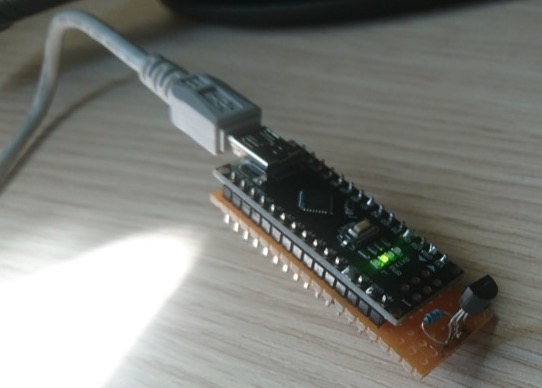

tgauweiler / USB Temperature Sensor
Introduction
To measure the room temperature with a PC an Arduino nano clone with a DS18B20 temperature was used.
Build
For building i used a raster PCB, mostly because for 2 components to design and etch a PCB is pretty overkill. The DS18B20 is a one wire sensor and only needed one extra resistor.

Software
The idea was to connect the sensor to a PC and use a simple python script to notify me over Slack if the measured temperature gets to high or to low.
Conclusion
This was a pretty straight forward project that worked directly out of the box. Only the Slack API took some time to figure out.